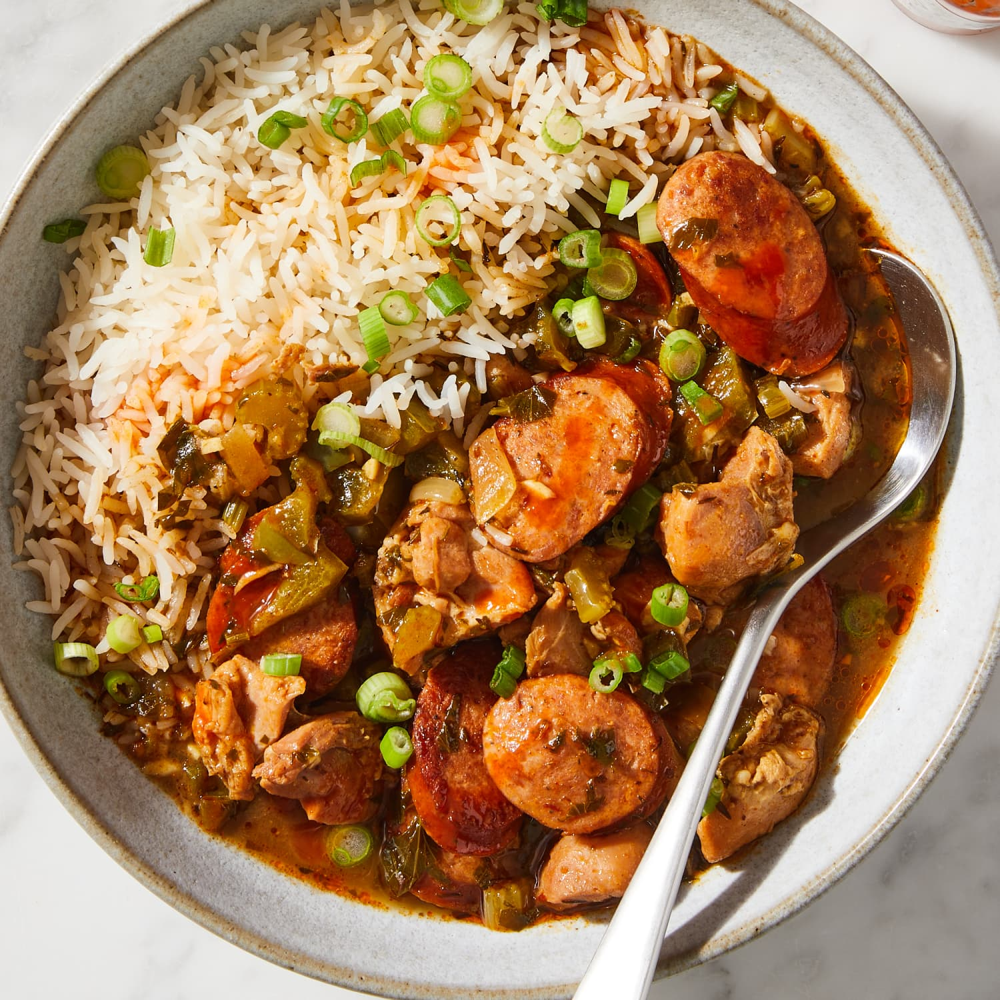

Classic Cajun Gumbo

Description
New Orleans-style gumbo is a true taste of Southern tradition. This boldly flavored stew is bursting with fresh, filling ingredients like bell pepper, sausage, stewed tomatoes, and crabmeat. Hot sauce ad Cajun seasonings add a kick that makes this Lousiana dish a favorite amongst our community of home cooks. Learn how to make the best homestyle gumbo right here.
Ingredients
- Andouille sausage and chicken are traditional to Cajun gumbo. To amp the convenience factor in this recipe, raw chicken thighs can be replaced with shredded rotisserie chicken.
- The holy trinity vegetables (bell peppers, onions, and celery) can be purchased pre-chopped at nearly all large grocery stores.
- The dark roux, on the other hand, requires constant stirring on medium heat, so this part you do not want to rush.
- Spices and herbs like parsley, thyme, bay leaves, cayenne pepper, and filé powder all add to the rich flavor profile of the gumbo.
Steps
- Cut the vegetables: Prepare the following, placing each in the same medium bowl as you complete it: Trim and dice 1 medium green bell pepper (1 1/2 cups), 1 medium yellow onion (1 3/4 cups), and 3 celery stalks (1 1/2 cups).
- Prepare the remaining aromatics: Prepare the following, placing each in the same small bowl as you complete it: Mince 6 garlic cloves; coarsely chop the leaves from 1/2 bunch fresh parsley, if using, until you have about 1/2 cup; add 2 tablespoons of the salt-free Cajun seasoning, 2 teaspoons dried thyme, 2 bay leaves, and 1/2 teaspoon cayenne pepper; stir to combine.
- Cut the chicken: If using raw chicken, dice 1 pound boneless, skinless chicken thighs into 1-inch pieces. Season with 1 1/2 teaspoons kosher salt, 1 1/2 teaspoons black pepper, and the remaining 1 tablespoon Cajun seasoning. If using rotisserie chicken, pick the meat and shred (about 4 cups); discard the skin and bones. (No need to season the rotisserie chicken meat.)
- Cook the sausage: Cut 14 ounces andouille sausage crosswise into 1/2-inch-thick rounds. Cook in a large pot or Dutch oven over medium-high heat until the sausage is browned all over and releases its fat, about 5 minutes. Transfer the sausage to a plate.
- Brown the chicken: If using raw chicken, add 1 tablespoon of the neutral cooking oil and the chicken to the pot. Cook, stirring often, until the chicken is browned all over, about 10 minutes. Using a slotted spoon, transfer the chicken to the plate of sausage. (Skip this step if using rotisserie chicken.)
- Cook the roux: Reduce the heat to medium. Scrape up any browned bits from the bottom of the pot with a wooden spoon. Add 4 tablespoons unsalted butter, the remaining 1/4 cup neutral oil, and 1/2 cup all-purpose flour. Cook, stirring constantly and scraping the bottom of the pot with the wooden spoon, until the roux resembles the color and texture of melted milk chocolate, 10 to 20 minutes. It will go from smelling like flour to toasted popcorn to nutty coffee. Don’t turn your back on the roux or it will burn!
- Add the aromatics and meat: Increase the heat to medium-high and add bell pepper mixture. Stir to coat in the roux. Cook, stirring frequently, until the onions are translucent, about 10 minutes. Add the garlic mixture and return the sausage and chicken and any accumulated juices to the pot. Cook, stirring frequently, until the garlic is fragrant, 2 to 3 minutes.
- Simmer: Add 6 cups low-sodium chicken broth. Increase the heat to high and bring to a boil. Reduce the heat to medium-low and simmer uncovered until the gumbo is thickened slightly and the flavors have melded, 35 to 45 minutes. Meanwhile, thinly slice 1/2 bunch scallions and cook white rice for serving if desired.
- Serve: Taste and season with more kosher salt as needed. (You'll likely need to add more salt if starting with rotisserie chicken.) The gumbo can be served immediately or the day after (which is when it tastes best). Serve with a scoop of cooked white rice, scallions, a dash of Crystal hot sauce, and filé powder as desired. Filé powder adds herbal notes and thickens the gumbo a bit.